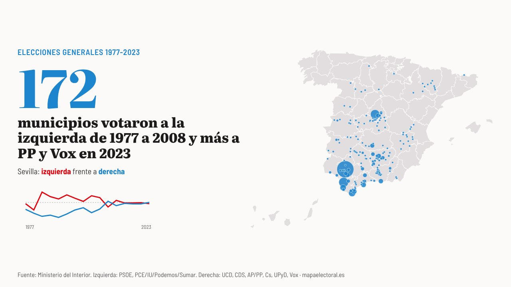

Actualidad · De feudo a vuelco · España
Con el PSOE andaluz en mínimos: Sevilla, Jerez y otros 170 municipios que votaron a la izquierda en todas las generales de 1977 a 2008 dieron en 2023 más votos a PP y Vox
Son 172 municipios con 2,23 millones de electores, casi todos en Andalucía y Castilla-La Mancha. Para la mayoría, el cambio llegó en 2011 y ya no se ha deshecho. El camino contrario, de la derecha a la izquierda, lo han hecho 147, casi todos pequeños.
Por Nacho G. del Álamo ·

Cada párrafo lleva una etiqueta: dato (cifra comprobable con las fuentes), patrón (relación que se repite, sin afirmar la causa), hipótesis (explicación posible, sin dos fuentes independientes) o contexto (hechos y declaraciones publicados por otros, enlazados). Cómo verificamos
ContextoLos partidos tienen hasta el 26 de octubre para registrar sus listas al 29N: según EFE, «el plazo para presentar candidaturas comienza el miércoles 21 y vence el lunes 26». En Andalucía, el PSOE llega a esa cita con malas noticias. El barómetro del Centra, el «CIS andaluz», le da entre 23 y 26 diputados autonómicos, por debajo de los 28 que sacó en mayo, y María Jesús Montero es «la líder con peor valoración para los andaluces», con un 3,20 de nota, según El Debate. Montero, que descartó ir en las listas del 29N, pidió que Pedro Sánchez vaya mucho a una comunidad que, dijo, será «pieza clave» en las generales (Europa Press).
DatoHemos repasado las 16 elecciones generales desde 1977 en los 7.845 municipios con datos de todas ellas, y hemos sumado el voto en dos bloques: la izquierda estatal (PSOE y PCE, IU, Podemos o Sumar) y la derecha estatal (UCD, CDS, AP y PP, Ciudadanos, UPyD y Vox). En 915 municipios, la izquierda sumó más que la derecha en las diez generales de 1977 a 2008. En 172 de ellos, en 2023 fue al revés.
DatoEl mayor es Sevilla. La izquierda ganó a la derecha en la ciudad en todas las generales hasta 2008: en 1982, por 64,8% a 30,3%; en 2004, por 59,6% a 35,5%. En 2023, PP y Vox sumaron el 50,1%, y PSOE y Sumar, el 48,3%. Detrás vienen Jerez de la Frontera (52,5% a 44,6%), Móstoles (49,9% a 48,6%), Algeciras (58,7% a 38,9%), Chiclana y La Línea. Juntos, los 172 suman 2.230.977 electores.
PatrónLos márgenes de 2023 son muy distintos. En Sevilla la derecha sumó 1,8 puntos más; en Móstoles, 1,3; en Pinto, una décima. En Algeciras, en cambio, fueron 19,8 puntos, y en Andújar, 19,2. En algunos de estos municipios el vuelco es un empate; en otros, un cambio de fondo.
Dónde están
Ver los 319 municipios
DatoDe los 172, 86 están en Andalucía, sobre todo en Jaén (19), Granada (17), Málaga (13), Córdoba (12), Sevilla (11) y Cádiz (9). Otros 38 están en Castilla-La Mancha, con Toledo a la cabeza (20 municipios). Hay 11 en Badajoz, 8 en Huesca y 8 en la Comunidad de Madrid, entre ellos Móstoles y Pinto.
DatoPara la mayoría, el cambio no es de ahora. En 115 de los 172, la derecha superó por primera vez a la izquierda en 2011, con la mayoría absoluta de Mariano Rajoy. En 2015, 146 de ellos volvieron a votar más a la izquierda, pero en noviembre de 2019 ya eran 103 los que votaban más a la derecha. En 31 municipios, 2023 fue la primera vez.
ContextoAndalucía ya había adelantado el cambio en sus propias elecciones. Tras las autonómicas de 2018, los politólogos José Manuel Trujillo y Juan Montabes escribían en un análisis publicado por la Universidad Pablo de Olavide que el resultado abría «una opción viable de alternancia política en un territorio de hegemonía socialista de más de tres décadas», y hablaban de la «lenta pero disruptiva quiebra» de esa hegemonía. Añadían que «la política andaluza va a poder ser leída en clave de anticipo de lo que puede ocurrir a partir de ahora en la política española, como ya pasó en ocasiones anteriores (1982 y 2015)».
El camino contrario
DatoHay 2.313 municipios donde la derecha sumó más que la izquierda en todas las generales de 1977 a 2008. En 147, PSOE y Sumar sumaron más en 2023. Son mucho más pequeños: entre todos tienen 280.619 electores. Los mayores están en Canarias (Telde, Santa Lucía de Tirajana y Agüimes, en Gran Canaria), en Mallorca (Manacor) y en Pontevedra (Ponteareas). Por número, la provincia con más es Navarra (39), seguida de Guadalajara (17) y Burgos (13).
PatrónEn Canarias, el bloque de la derecha estatal fue muy grande en 1977 y 1979, cuando UCD arrasó en las islas, y después compitió con partidos canarios que aquí no cuentan en ningún bloque. En Navarra, UPN se cuenta con el PP en todas las elecciones. En los dos casos, el cambio de bloque dice tanto de cómo han cambiado los partidos como de cómo han cambiado los votantes.
ContextoLa comparación por bloques tiene límites. UCD era un partido de centro, y sumarlo a AP en 1977 y 1979 hace que la derecha estatal sea más grande que la derecha de hoy. Los partidos nacionalistas y regionalistas no cuentan en ningún bloque. Y un municipio no son sus votantes: Sevilla tenía 370.522 electores en 1977 y 529.263 en 2023, y muchos de los de hoy no votaban entonces.
Mira tu municipio en el mapa, elección a elección · Más: El PSOE pasaba del 60% en 748 municipios en 1982 · Los municipios que siempre votan lo mismo · Atlas: Los Palacios y Villafranca
Método y fuentes
- Qué se compara
- Los 7.845 municipios con datos de las 16 elecciones generales de 1977 a 2023, con el voto sumado en dos bloques: izquierda estatal (PSOE y PCE, IU, Podemos o Sumar) y derecha estatal (UCD, CDS, AP y PP, Ciudadanos, UPyD y Vox). Feudo: un bloque suma más en las diez generales de 1977 a 2008. Vuelco: el otro bloque suma más en 2023.
- Límites
- Los bloques son una simplificación: UCD era un partido de centro, y sumarlo a AP en 1977 y 1979 agranda la derecha estatal de entonces. Los partidos nacionalistas y regionalistas (CiU y Junts, ERC, PNV, EH Bildu, BNG, CC, PA y otros) no cuentan en ningún bloque. UPN se cuenta con el PP en todas las elecciones. Quedan fuera los municipios sin datos en alguna de las 16 elecciones (entre ellos unos 139 que faltan en 1982 y los creados después de 1977). Sin voto exterior. Un municipio no son sus votantes: el censo de 2023 no es el de 1977.
- Cómo se calcula
- Porcentaje de cada bloque sobre los votos a candidaturas en cada municipio y elección. Un municipio cambia de bloque cuando el otro bloque suma más votos. Cifras reproducibles con los scripts del expediente de la pieza. Metodología de Actualidad · Metodología del Atlas
- Fuentes
- Ministerio del Interior, resultados electorales por mesa (Infoelectoral), vía pollspaindata. Sin voto exterior (CERA)
- Ministerio del Interior, resultados por municipio de las generales de 1977, 1979 y 1982 (Infoelectoral)
- EFE, la carrera hacia el 29N avanza tras despejarse las incógnitas de las coaliciones (18-10-2026)
- El Debate (Roberto Marbán), el barómetro del Centra de octubre (19-10-2026)
- Europa Press vía Infobae, Montero descarta ir en las listas del PSOE el 29N (6-10-2026)
- José Manuel Trujillo y Juan Montabes, Las elecciones autonómicas andaluzas de 2018: un resultado electoral imprevisto de consecuencias políticas innovadoras en la gobernabilidad (2019), repositorio de la Universidad Pablo de Olavide
- Autoría
- Nacho G. del Álamo
- Revisión de datos y texto
- Nacho G. del Álamo, 20 de octubre de 2026
- Publicado · actualizado
- 20 de octubre de 2026 · 20 de octubre de 2026
- Correcciones
- Ninguna.
Serie «Camino al 29N»: 92 piezas
- Santa Cruz de Mudela, 874 a 873: los 185 pueblos que se ganaron por un voto
- El otro Clásico: en los barrios de renta media, el PP saca el triple de votos en Madrid que en Barcelona
- Así queda el mapa electoral de España antes del 29N: el PP ganó en 40 provincias y el PSOE, en 10
- Quién va con quién el 29N: Frente Amplio y Podemos, separados en 47 provincias; en 2015, juntos habrían sacado 15 diputados más
- Las provincias que deciden el 29N: 32 escaños se movían en 2023 con menos de 5.000 votantes, y el PP defiende 13
- Un voto en Santa Cruz de Mudela, 101 en Cantabria, 7.097 en Palencia: la semana en que el 29N se contó en márgenes
- Las dos calles que parten Barcelona: la Diagonal en el voto a la derecha, la Meridiana en el independentismo
- Quién vota qué, barrio a barrio: el PP sube 21 puntos donde pesan las rentas del capital, el PSOE 15 donde abundan los peones y Vox solo se mueve con los jubilados
- A seis semanas del 29N: en 534 barrios de España no votó ni la mitad del censo, y tres de cada cuatro están entre los más pobres
- Ante el 29N: del Polígono Sur a la Cañada Real, en 78 de los 93 barrios donde más pesan las ayudas sociales no votó ni la mitad
- Estás aquíCon el PSOE andaluz en mínimos: Sevilla, Jerez y otros 170 municipios que votaron a la izquierda en todas las generales de 1977 a 2008 dieron en 2023 más votos a PP y Vox
- A cinco semanas del 29N: en la calle de los Hermanos García Noblejas, en Madrid, PP y PSOE se cambian de acera 12 veces, y el PP siempre gana en el lado con más renta
- Vox busca el voto de los barrios obreros: en la Región de Murcia, nueve de cada diez secciones pobres ya votan más a PP y Vox que a PSOE y Sumar
- Sevilla vota por barrios y Lugo, mezclada: el índice que mide qué capitales están partidas por el voto
- El voto a Vox de las mujeres jóvenes se ha triplicado desde 2023, y la izquierda ha perdido 13 puntos entre ellas
- El PP saca 6 puntos al PSOE en las encuestas: ni el mayor fallo de la última década, el de 2023, daría el sorpasso que anuncia Iván Redondo
- El PP baja en las cinco encuestas de la semana, pero con Vox sigue sumando mayoría absoluta en todas
- PP y Vox pactan el Senado: con las encuestas sumarían entre 158 y 163 senadores, alrededor de los 160 que necesitan para renovar el Constitucional sin el PSOE
- ¿Sale tu candidato? Busca tu provincia: el día que se cierran las listas, 251 escaños están casi decididos y 210 candidatos se juegan los otros 99
- Siete de cada cien electores pidieron votar por correo en 2023, más del triple que en 2015: en Bizkaia, 14; en Girona, 3
- Ver las 92 piezas de la serie
Más datos: más piezas sobre historia electoral · más piezas sobre pueblos y municipios.
Sigue leyendo
- EncuestasEncuestas de las elecciones generales del 29N: todas, con sus escaños, actualizadas cada día
- Brasil, estado a estadoLula pasó de perder por 2,2 millones de votos a ganar por 4,4: en el mapa de Brasil solo Minas Gerais cambió de color
- Los pueblos de los colonosLos pueblos que levantó Franco votan más a Vox que sus vecinos: en Tiétar, Rosalejo y Pueblonuevo de Miramontes pasó del 25 %
- Del balcón a la cárcelVic dio el 69 % a la Lliga en 1933 y hoy es la gran ciudad de Junts; L'Hospitalet dio el 77 % al Front d'Esquerres de Companys y hoy vota al PSC
- ActualidadTodas las piezas de actualidad
- AtlasAtlas de las anomalías electorales